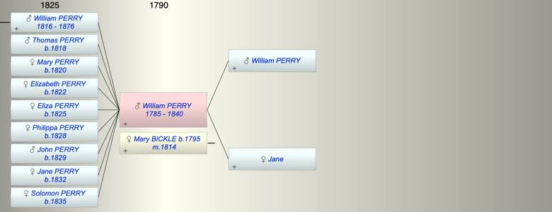

| [Index] |
| William PERRY (1785 - 1840) |
|  |
| b. 1785 |
| m. 29 Mar 1814 Mary BICKLE (1795 - ) at Kelly Devon |
| d. 1840 at Kelly Devon aged 55 |
| Near Relatives of William PERRY (1785 - 1840) | ||||||
| Relationship | Person | Born | Birth Place | Died | Death Place | Age |
| Father in Law | Thomas BICKLE | |||||
| Mother in Law | MAry | |||||
| Father | William PERRY | |||||
| Mother | Jane | |||||
| Self | William PERRY | 1785 | 1840 | Kelly Devon | 55 | |
| Wife | Mary BICKLE | 1795 | Kelly Devon | |||
| Son | William PERRY | 1816 | Kelly Devon | 27 Jan 1876 | Kelly Devon | 60 |
| Son | Thomas PERRY | 1818 | Kelly Devon | |||
| Daughter | Mary PERRY | 1820 | Kelly Devon | |||
| Daughter | Elizabeth PERRY | 1822 | Kelly Devon | |||
| Daughter | Eliza PERRY | 1825 | ||||
| Daughter | Philippa PERRY | 1828 | ||||
| Son | John PERRY | 1829 | Kelly Devon | |||
| Daughter | Jane PERRY | 1832 | Kelly Devon | |||
| Daughter | Solomon PERRY | 1835 | Kelly Devon | |||
| Daughter in Law | Matilda WHITE | 28 Nov 1814 | Salisbury | 26 Jul 1882 | Kelly Devon | 67 |
| Grandson | William PERRY | 1841 | Kelly Devon | |||
| Grandson | Jehu PERRY | 1843 | Kelly Devon | 1913 | Gulworthy | 70 |
| Grandson | John PERRY | 1844 | Kelly Devon | 1873 | Kelly Devon | 29 |
| Granddaughter | Elisa PERRY | 1846 | Kelly Devon | |||
| Granddaughter | Solomon PERRY | 1851 | Kelly Devon | |||
| Granddaughter | Matilda PERRY | 1854 | Kelly Devon | |||
| Grandson | John PERRY | 1855 | Kelly Devon | |||
| Grandson | George PERRY | 1856 | Kelly Devon | |||
| Events in William PERRY (1785 - 1840)'s life | |||||
| Date | Age | Event | Place | Notes | Src |
| 1785 | William PERRY was born | Note 1 | |||
| 29 Mar 1814 | 29 | Married Mary BICKLE (aged 19) | Kelly Devon | Note 2 | |
| 1816 | 31 | Birth of son William PERRY | Kelly Devon | Note 3 | |
| 1818 | 33 | Birth of son Thomas PERRY | Kelly Devon | Note 4 | |
| 1820 | 35 | Birth of daughter Mary PERRY | Kelly Devon | Note 5 | |
| 1822 | 37 | Birth of daughter Elizabeth PERRY | Kelly Devon | Note 6 | |
| 1825 | 40 | Birth of daughter Eliza PERRY | Note 7 | ||
| 1828 | 43 | Birth of daughter Philippa PERRY | Note 8 | ||
| 1829 | 44 | Birth of son John PERRY | Kelly Devon | Note 9 | |
| 1832 | 47 | Birth of daughter Jane PERRY | Kelly Devon | Note 10 | |
| 1835 | 50 | Birth of daughter Solomon PERRY | Kelly Devon | Note 11 | |
| 1840 | 55 | William PERRY died | Kelly Devon | Note 12 | |
| Personal Notes: |
| most of the children are recorded on the 1841 census and the mother Mary is wiodwed Interestingly Elizabeth Oliver 7 is with the family |
| Created on a Mac™ using iFamily for Mac™ on 12 Sep 2023 |